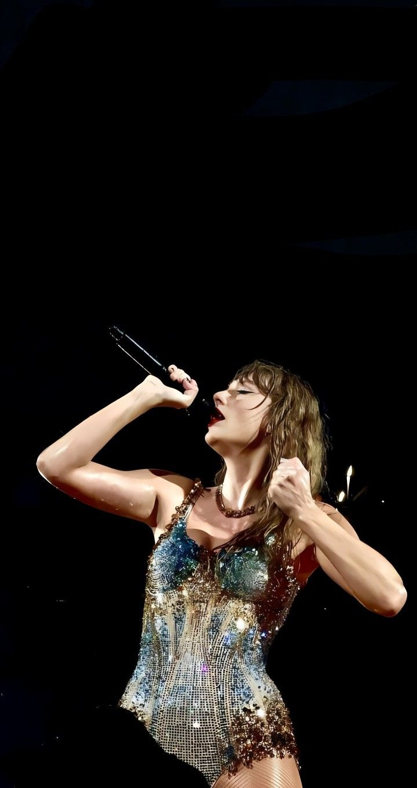
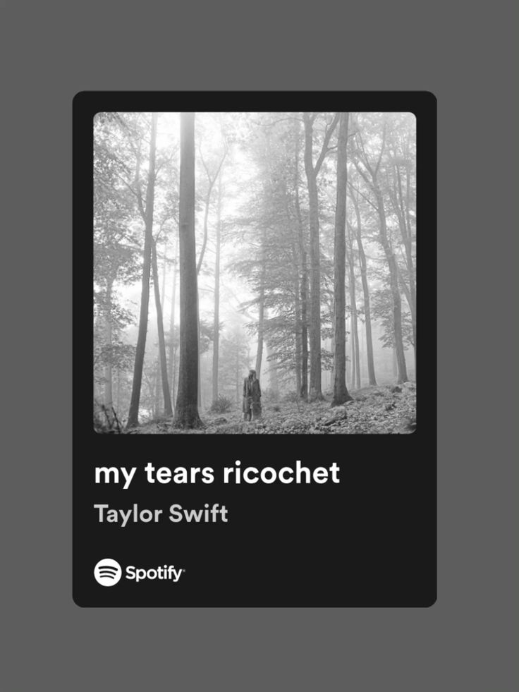
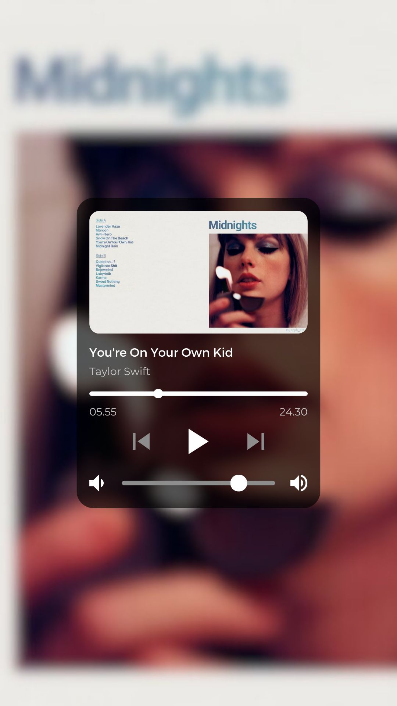

The Archer
Album: Lover (2019)
A vulnerable track exploring anxiety and the fear of losing people. A fan-favorite track 5.

My Tears Ricochet
Album: folklore (2020)
A haunting song about the ghost of a relationship and the bitterness of betrayal.

Own Kid
Album: Midnights (2022)
A coming-of-age anthem about finding strength within yourself after realizing you're on your own.